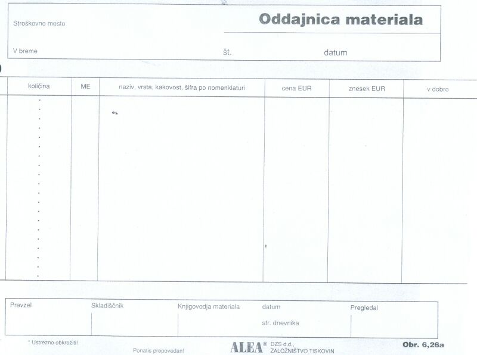

|
Naloga delovne dokumentacije je natanèen opis dogodka, procesa ali predmeta obravnave. Delovni dokumenti vsebujejo vse potrebne podatke, ki enolièno opišejo dogodek: datum, èas, kraj, odgovorne osebe, predmet obravnave. Uèitelj ali kateri drug delavec podpiše in izda prejemnico, s katero potrdi, da je prejel material ali predmete, ki so zapisani v tej prejemnici. Ima pa prejem materiala tudi svojo drugo plat oziroma zorni kot. Tam, kjer nekdo nekaj prejme, namreè obstoja nekdo, ki je tisto oddal. Tudi ta lahko napiše za taisti dogodek nek drug dokument, ki ta dogodek opisuje iz drugega zornega kota, namreè iz zornega kota straniu, ki oddaja material. Tak dokument se zato imenuje oddajnica. Primer: Delavec pride iz proizvodnje v orodjarno ali v skladišèe orodje, ki ga potrebuje. Gre za poseben sveder. Tega orodja delavec nima v osnovni opremi svojega delovnega mesta. To se lahko zgodi v primeru, ko gre za draga in redka orodja ali pa za orodja, ki jih uporablja organizacija le obèasno. Delavec zaprosi odgovornega (to je lahko skladišènik) v orodjarni za želeni sveder. Odgovorni mu to orodje izroèi, hkrati pa delavca zaprosi, da podpiše oddajnico za izdano orodje. Oglejmo si nekaj podatkov v splošni oddajnici: 1. Stroškovno mesto - delovna enota, iz katere je prišel delavec, ki potrebuje orodje. 2. V breme - to je naslov oddajnika, v našem primeru orodjarne. 3. Datum - datum oddaje orodja. 4. Kolièina - v obliki MERSKEGA ŠTEVILA podana kolièina želenega materiala, denimo 6 (šest). 5. ME - merska enota želenega materiala, denimo kartuše ali kosi. 6. V dobro - to je naslov prejemnika, v našem primeru delavca, ki je prišel po orodje. 7. Naziv, vrsta, kakovost, šifra po nomenklaturi - naziv prejetega materiala. Najpogosteje je skladišèe tista organizacijska enota, ki izdaja material ostalim enotam.  Slika 1: Splošni obrazec za oddajnico. 1. Vprašanja za usmerjanje pozornosti in usvajanje novih besed: 1. Katere podatke mora vsebovati delovna dokumentacija? 2. Kako se imenuje obrazec, s pomoèjo katerega organizacija potrdi, da je oddala material, ki ga nekdo drugi potrebuje za doseganje svojih ciljev? 3. Naštej podatke, ki jih vsebuje splošna oddajnica. To so rubrike ali stolpci v obrazcu. 4. Kako se glasi naziv oddanega materiala v primeru iz besedila? 5. Koliko znaša mersko število v primeru iz besedila? 6. Koliko znaša merska enota v primeru iz besedila? 7. Katera organizacijska enota najpogosteje izdaja material ostalim organizacijskim enotam? 8. Na sliki te uène enote poskusi ugotoviti, kdo izdaja obrazce za oddajnice materiala? 9. Na sliki te uène enote poskusi ugotoviti številko oziroma oznako obrazca oddajnice materiala? 10. Kakšna je tipska oznaka obrazca za oddajnico, ki smo ga spoznali v tej uèni enoti? 2. Zapiši od ene do pet kljuènih besed, ki povzemajo vsebino te uène enote. 3. Vprašanja za razmislek, ponavljanje in povezovanje z lastno izkušnjo: 4. Domaèa naloga: V enem do petih stavkih zapiši, kaj ti je v tej uèni enoti najbolj ostalo v spominu. |